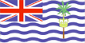

{kind=link}


![[Country map of British Indian Ocean Territory]](../maps/io-map.jpg)
| British Indian Ocean
Territory |
 |
|
| | |
| Geography |
Location: Southern Asia, archipelago in the Indian Ocean, about one-half the way from Africa to Indonesia
Geographic coordinates: 6 00 S, 71 30 E
Map references: World
Area:
total:
60 sq km
land:
60 sq km
water:
0 sq km
note:
includes the entire Chagos Archipelago
Area - comparative: about 0.3 times the size of Washington, DC
Land boundaries: 0 km
Coastline: 698 km
Maritime claims:
exclusive fishing zone:
200 nm
territorial sea:
3 nm
Climate: tropical marine; hot, humid, moderated by trade winds
Terrain: flat and low (most areas do not exceed four meters in elevation)
Elevation extremes:
lowest point:
Indian Ocean 0 m
highest point:
unnamed location on Diego Garcia 15 m
Natural resources: coconuts, fish
Land use:
arable land:
0%
permanent crops:
0%
permanent pastures:
0%
forests and woodland:
NA%
other:
NA%
Irrigated land: 0 sq km (1993)
Natural hazards: NA
Environment - current issues: NA
Geography - note: archipelago of 2,300 islands; Diego Garcia, largest and southernmost island, occupies strategic location in central Indian Ocean; island is site of joint US-UK military facility
| People |
Population:
no indigenous inhabitants
note:
approximately 3,000 native inhabitants, known as the Chagosians or Ilois, were evacuated to Mauritius before construction of UK-US military facilities; in 1995, there were approximately 1,700 UK and US military personnel and 1,500 civilian contractors living on the island (July 2000 est.)
| Government |
Country name:
conventional long form:
British Indian Ocean Territory
conventional short form:
none
abbreviation:
BIOT
Data code: IO
Dependency status: overseas territory of the UK; administered by a commissioner, resident in the Foreign and Commonwealth Office in London
Legal system: NA
Executive branch:
chief of state:
Queen ELIZABETH II (since 6 February 1952)
head of government:
Commissioner David Ross MACLENNAN (since NA 1994); Administrator Don CAIRNS (since NA); note - both reside in the UK
cabinet:
NA
elections:
none; the monarch is hereditary; commissioner and administrator appointed by the monarch
Diplomatic representation in the US: none (overseas territory of the UK)
Diplomatic representation from the US: none (overseas territory of the UK)
Flag description: white with six blue wavy horizontal stripes; the flag of the UK is in the upper hoist-side quadrant; the striped section bears a palm tree and yellow crown centered on the outer half of the flag
| Economy |
Economy - overview: All economic activity is concentrated on the largest island of Diego Garcia, where joint UK-US defense facilities are located. Construction projects and various services needed to support the military installations are done by military and contract employees from the UK, Mauritius, the Philippines, and the US. There are no industrial or agricultural activities on the islands.
Electricity - production:
NA kWh
note:
electricity supplied by the US military
Electricity - consumption: NA kWh
| Communications |
Telephones - main lines in use: NA
Telephone system:
separate facilities for military and public needs are available
domestic:
all commercial telephone services are available, including connection to the Internet
international:
international telephone service is carried by satellite (2000)
Radio broadcast stations: AM 1, FM 2, shortwave 0 (1998)
Radios: NA
Television broadcast stations: 1 (1997)
Televisions: NA
Internet Service Providers (ISPs): NA
| Transportation |
Highways:
total:
NA km
paved:
short stretch of paved road of NA km between port and airfield on Diego Garcia
unpaved:
NA km
Ports and harbors: Diego Garcia
Airports: 1 (1999 est.)
Airports - with paved runways:
total:
1
over 3,047 m:
1 (1999 est.)
| Military |
Military - note: defense is the responsibility of the UK; the US lease on Diego Garcia expires in 2016
| Transnational Issues |
Disputes - international: the Chagos Archipelago is claimed by Mauritius and Seychelles